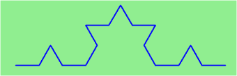
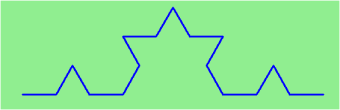

Recursieve tekeningen met Python

Tekenen met turtle
Python heeft een module waarmee je met een zogenaamde 'turtle' op het scherm kan tekenen. Je kan alle functies uit de module importeren met from turtle import *
Je bestuurt hiermee een pen die over het scherm beweegt en een lijn achterlaat. Met de functies left(graden) en right(graden) draai je om je as heen. Met forward(pixels) en backward(pixels) ga je voor- en achteruit, en laat je een lijn achter.
In de documentatie van Python over de turtle module kan je alle beschikbare functies en een aantal voorbeelden vinden. Met bijvoorbeeld speed(0) kan je sneller tekenen. En color("red") levert een rode lijn op.
Opdracht 1: Klik hier voor een simpel voorbeeld van een vierkant. Pas het voorbeeld aan zodat je een rode vierkant hebt en een grotere blauwe vierkant. Het is prima als er een verbindende lijn tussen de twee vierkanten zit (maar dat kan je voorkomen met penup en pendown).
Optionele opdracht: Pas het voorbeeld aan zodat je nog maar één forward en één right aanroep gebruikt. Je moet een loop zoals while of for gebruiken.
Recursieve functies
Je kan in Python zelf functies definiëren met het def keyword. Functies zorgen ervoor dat je programma korter wordt, beter gestructureerd, en in onderdelen herbruikbaar. Hier is een voorbeeld van een functie die hallo tegen je zegt:
def zeghallo(naam):
print("Hallo " + naam)Je kan de functie aanroepen door bijvoorbeeld zeghallo("Python") te schrijven.
Functies kunnen ook zichzelf aanroepen. Dat noem je een recursieve functie.
Opdracht 2: Klik hier om de functie hierboven uit te voeren. Voeg een extra opdracht, onder de print, aan de functie toe: zeghallo(naam). Wat gebeurt er? Wat gaat er mis?
Recursieve functies hebben altijd een stopvoorwaarde nodig, waarmee besloten wordt om te stoppen met de recursie. Anders gaat het eindeloos door.
Opdracht 3: Bekijk de code hier. De code gaat eindeloos door (tot Python ermee ophoudt). Voeg een if toe met de juiste voorwaarde, zodat de countdown op 0 ophoudt, en er "Boem!" wordt geprint.
Een recursieve spiraal
Zie het plaatje van een rechthoekige spiraal hierboven. Hij is van buiten naar binnen getekend. Welke stappen zet je als je zo'n soort figuur op papier tekent? Het lijkt natuurlijk op een vierkant, maar wat gebeurt er met de lengte van de lijnen als je verder naar binnen toe gaat?
Opdracht 4: Gebruik de Repl.it link van opdracht 1 om een spiraal te tekenen. Dat mag gewoon met heel veel forward en right aanroepen, of met een loop en een extra variabele.
Opdracht 5: Bekijk de code hier en voer het uit. Er mist weer een stopvoorwaarde. Voeg de stopvoorwaarde toe, zodat er niet getekend wordt met negatieve lengtes.
Sierpinski-kromme

 


Opdracht 6: Bekijk de opvolging van figuren hier. Kan je een recursieve functie maken die deze figuren kan tekenen? Misschien zie je dat elk lijnstuk in elke stap steeds uit drie delen bestaat. Het eerste deel is altijd recht, het tweede deel is óf een driehoek óf recht, en het derde deel is ook altijd recht.